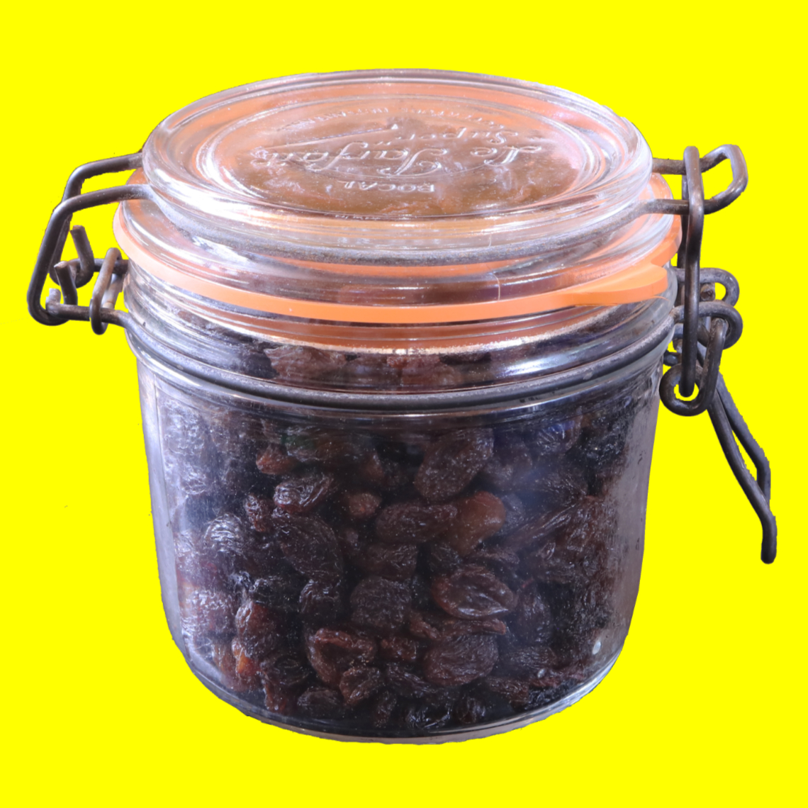
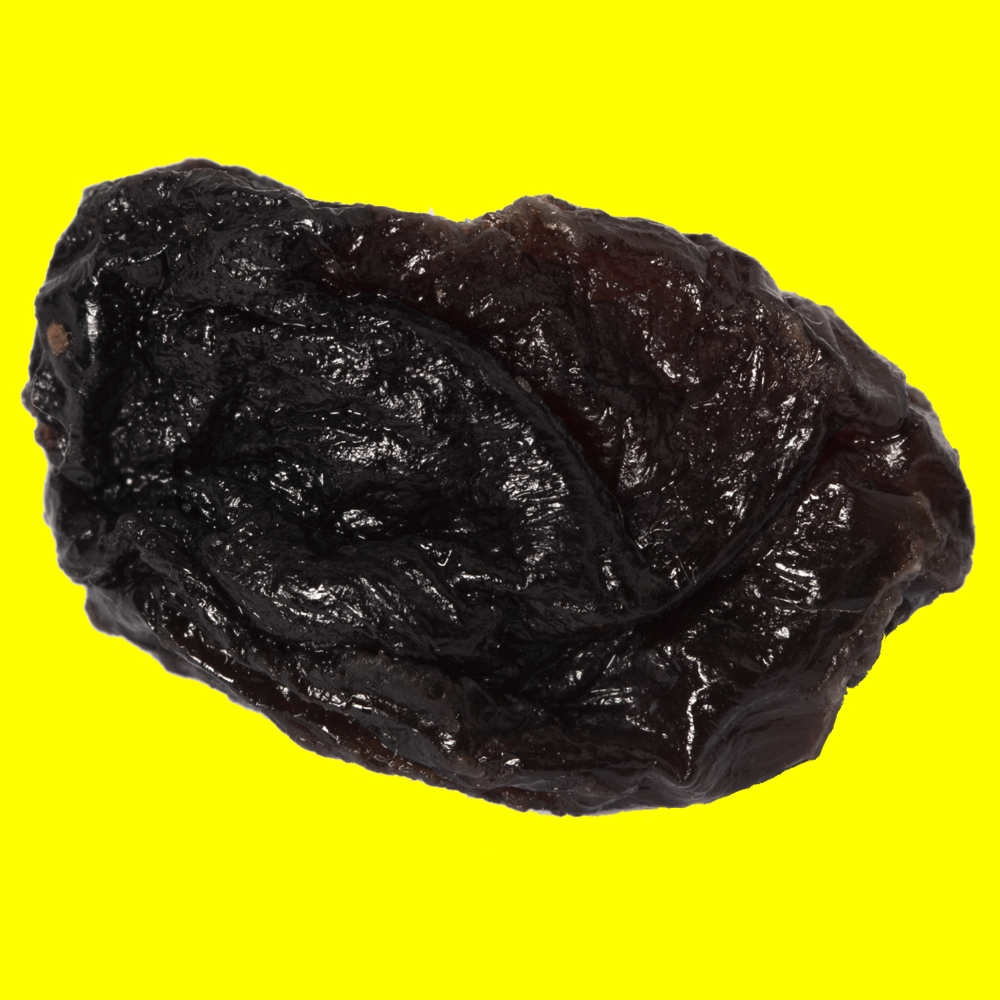
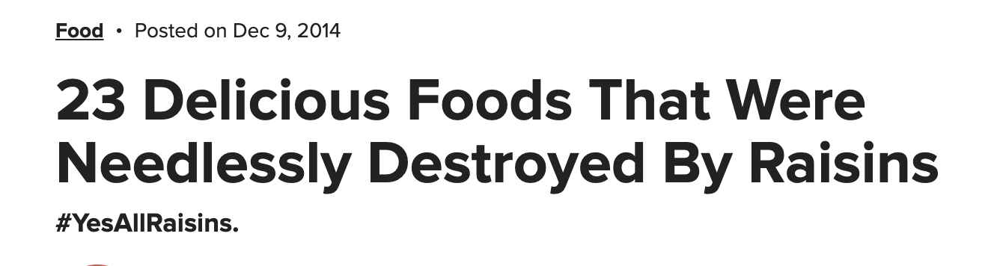
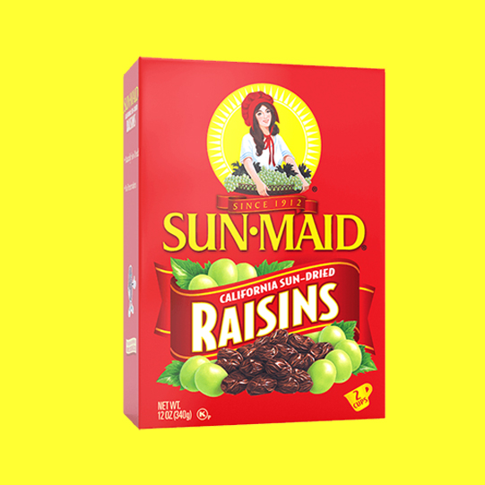
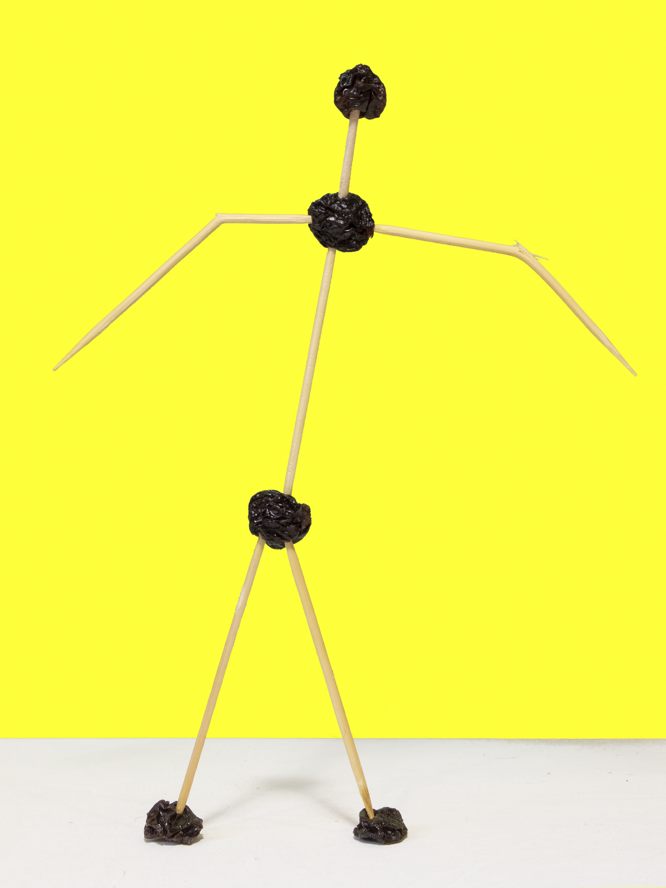

Hello world :) welcome to raisin_things ...
read_me_first.txt
You've made it here which probably means you are on a non-mobile device - that's assuming I've got the code right. This site has been designed for best use on Google Chrome but it works on Safari and other internet browsers too, albeit with a few glitches in the technical matrix.
You will also need a decent internet connection and possibly some patience as there is a lot of content on this page - however, it will load gradually and a download speed of about 4mbps should do the trick click here to check yours (link opens in a new tab).
Anyway, you're on your own now, accompanied by your intuition and computer mouse or trackpad. I would also advise making sure your device isn't muted!
Happy scrolling,
James
p.s. Should you want to download Google Chrome here is a link (link opens in a new tab). (Disclaimer: I am not sponsored by Google!)
You will also need a decent internet connection and possibly some patience as there is a lot of content on this page - however, it will load gradually and a download speed of about 4mbps should do the trick click here to check yours (link opens in a new tab).
Anyway, you're on your own now, accompanied by your intuition and computer mouse or trackpad. I would also advise making sure your device isn't muted!
Happy scrolling,
James
p.s. Should you want to download Google Chrome here is a link (link opens in a new tab). (Disclaimer: I am not sponsored by Google!)
You may have noticed a slighly annoying noise when loading this page, if so, the following game was the culprit. If not, there is a chance you may have to enable your flash player to play it!
Anyway, the internet often turfs up some suprises and here is one of them. Give this game a go, its not that difficult and doesn't take that long!
You can complete it in about 10 minutes :)
You can complete it in about 10 minutes :)
Oh, and by the way, it won't hurt you to leave the music on from this game for the rest of your journey within raisin_things.
However, if it becomes annoying after a while you can always click the mute button on the game!
However, if it becomes annoying after a while you can always click the mute button on the game!
Did you catch the raisin??? If so well done, you can start the next part with your head held high and a plump n juicy raisin.
And if you didn't... that's ok, I'm sure I've got a spare raisin somewhere that I can lend you :)
Raisins don't just grow on trees you know?
British weather, however, isn't the greatest for dehydrating grapes so I had to resort to a more predicatable energy source.
https://www.wikihow.com/Make-Raisins ^^^^ ^^^^ Hover for my attempt, 3.5hrs worked best for Tesco Suntrail Red Grapes
(opens in a new tab!)
--> gone to far??? rehydrate-rock-hard-dried-fruit-with-clever-hack-0169303
(opens in a new tab!)
hover over me ^^
If you do perform this on your raisins to reduce their 'fine lines and wrinkles', please note that the raisins may not me edible after this treatment.
I thought I should include this following piece of information, it's probably been on your mind a while now. That is unless you are a connoisseur of all things dehydrated grape, in which case, please feel free to skip it.

I'm just raisin awareness

Click here for link to creating your own Dancing Raisins using this technique.
(link opens in a new tab)
(link opens in a new tab)

raisIn d'etre...

Never been in the situation where you mistake a raisin cookie for a choc chip? Watch this.

(Link opens in a new tab!)
Rehydrated and dehydrated
hover over me ^^

** It was a cat treat she ate not a raisin or "Fun Snap".
That being said I wonder if raisins are ok for cats?
Note: You may want to mute any other sounds on this page before proceeding.
"My raisin"

You are at the end of raisin_things click here to leave. Bye :)